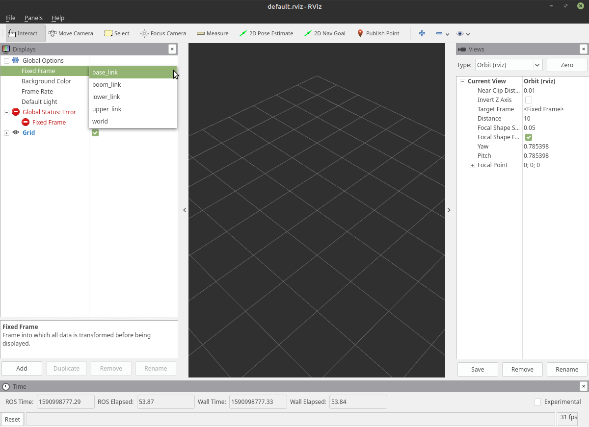

Description
This package contains basic information about the crane. By manipulating the files included in this, you can change the appearance of the crane and the strength of the motor installed in the joint.
File description
├── CMakeLists.txt
├── config
│ └── joint_names.yaml :File to set joint name
├── launch
│ ├── base.launch : For test. Output the base of the crane with rviz
│ ├── k_crane_description.launch : Upload basic information of crane to ROS parameter meta server
│ ├── k_crane_display.launch : View in rviz
│ ├── k_crane_with_payload_description.launch : Upload basic information of crane to ROS parameter server. With hanging load
│ └── k_crane_with_payload_display.launch : Display with rviz. With hanging load
├── meshes : Various mesh data
│ ├── base.stl
│ ├── boom.stl
│ ├── document
│ ├── engine.stl
│ ├── lower.stl
│ ├── payload.stl
│ ├── rope.stl
│ ├── specifications.pdf : Confidential information. Crane specifications
│ ├── upper.stl
│ └── ブームフットピン座標.pdf : Confidential information. Used to check joint coordinates
├── package.xml
└── robots : setting file
├── base.urdf.xacro : For test. Crane base configuration file
├── camera.urdf.xacro : Configuration file for using the camera with gazebo
├── common.urdf.xacro : File for macro definition
├── fixed_payload.urdf.xacro : Hanging load configuration file
├── imu_100.urdf.xacro : Setting file for inertial sensor (100Hz)
├── imu_128.urdf.xacro : Setting file for inertial sensor (128Hz)
├── imu.urdf.xacro : Inertial sensor basic configuration file
├── k_crane.urdf.xacro : Setting file of crane without hanging load. Includes file of element parts
├── k_crane_with_fixed_payload.urdf.xacro : For test
├── k_crane_with_payload.urdf.xacro : Crane setting file with hanging load. Includes file of element parts
├── misc.xacro : Other settings
└── payload.urdf.xacro : Settings file for suspended loads including ropes
Tutorial
show crane in rviz
1. No hanging load
Start rviz and display the crane.
roslaunch k_crane_description k_crane_display.launch

An empty rviz should be up.
First, change the Fixed Frame on the upper left of the screen from map to world.
Now the error disappears.
Next, load the model.
Press Add at the bottom left of the screen and select RobotModel.

This will give you a bright red crane.

You can move the crane by operating the slide bar that appeared at the same time as rviz. Check the range of motion. Here, if you are not satisfied with the range of motion, you can modify the setting file (k_crane_description/robots/k_crane.urdf). You can change it.
2. With hanging load
Now try the above version with hanging loads.
roslaunch k_crane_description k_crane_with_payload_display.launch
Like the no hanging load version,
First, change the Fixed Frame on the upper left of the screen from map to world.
Next, load the model.
Press Add at the bottom left of the screen and select RobotModel.
This will give you a bright red crane.